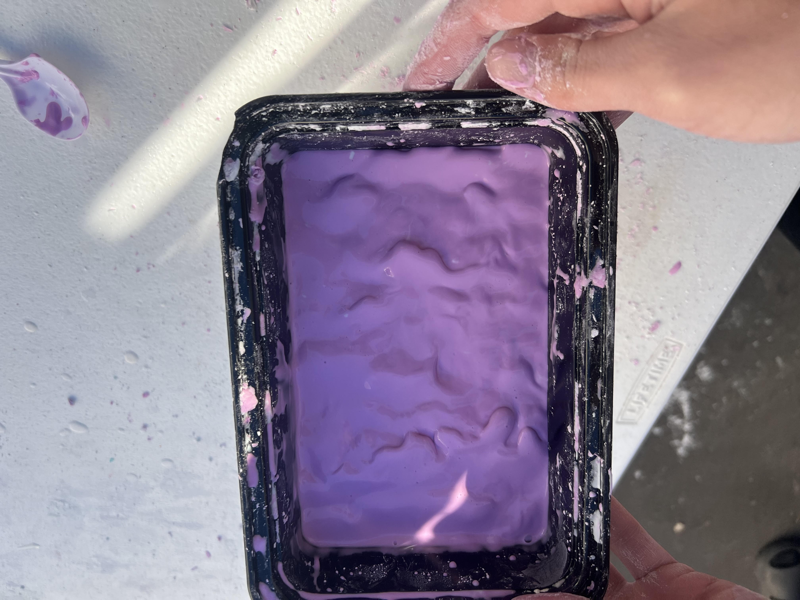
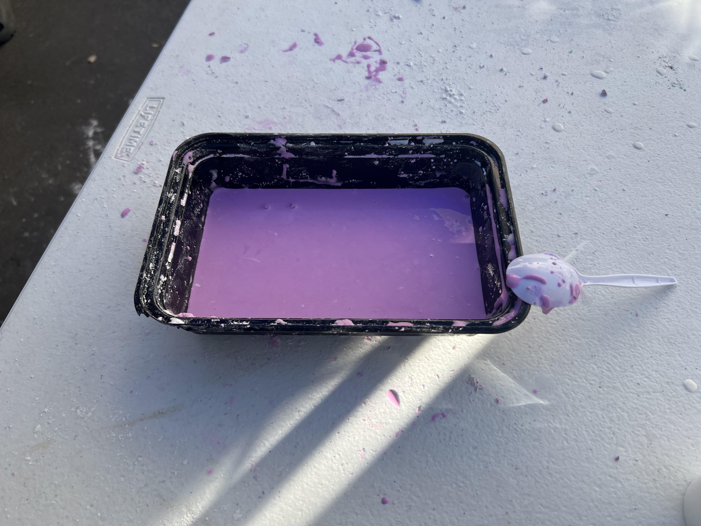
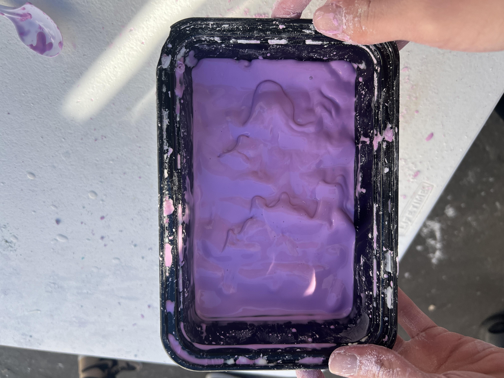

This week we learned about chemical engineering and we started working on our car projects. Learning about chemical engineering wasn't as interesting as the other fields of engineering but I did learn about what they did. I didnt know how important they were in the oil industry. For my car project I chose to make a arduino car because I thought it was more interesting. I want to learn how to code the car because it looks fun and I might buy and build one myself for fun.



We started working on our car projects this week and so far we have just been CADing and planning how we are building our cars. Since I am making the arduino car, I have to CAD the circuit which has been difficult. I need to start designing how my car will look like but I think it will probaly be pretty basic with the motors in the back and have a short wheel base to make it nimble.